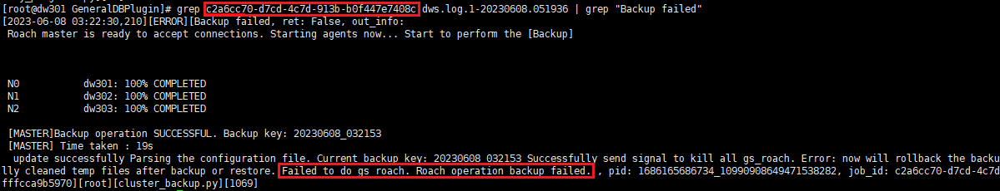

GaussDB(DWS) 8.1.3版本使用客户端部署到生产主机和独立物理服务器场景下执行备份任务，任务失败，任务详情中显示“Roach命令执行失败”。
在数据备份完成后，GaussDB(DWS)备份进程还未完全退出，上传进程就被拉起来了，导致业务处理冲突。
cd /opt/DataBackup/ProtectClient/ProtectClient-E/slog/Plugins/GeneralDBPlugin/
Failed to do gs roach. Roach operation backup failed
示例如下：
